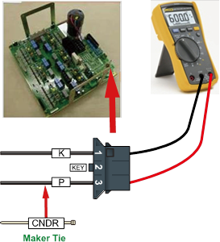

Previous error code: E0011 AMP overvoltage (P-N)
1.1.53.1. Outline
Direct current voltage (P-N) of Servo Drive Unit that drives the motor exceeded the set value.
1.1.53.2. Causes and examine methods
|
This could occur due to an abrupt change in the operation of the robot. It could also occur due to an increase in the regenerative discharge resistor value.
<Case: Error occurs at a certain step according to the robot's operation speed> (1) Please make changes on a speed of Robot's operation in order to confirm the error. (2) Check the regenerative discharge resistor value. |
(1) Please confirm the occurrence of error according to the speed of Robot's operation.
If a robot reduce the speed rapidly, or make a high speed movement toward to gravity direction, it can cause an overvoltage error. Please confirm if an error occurred according to a speed of Robot's operation. AMP overvoltage occurrence error also can be caused by an invalid recovery discharge resistance value or recovery discharge control malfunction.
n Make changes on a speed of Robot's operation
If a recovery electric power that generated by Robot's operation exceeds the controller's designed specification, overvoltage error may occurs. Please reduce the speed of a step that the error occurs and re-operate in order to confirm if the error persists. If the error does not occur when the speed is reduced, please change the speed of step and use it.
(2) Please confirm the occurrence of error according to the speed of Robot's operation.
n Examining the recovery discharge resistance value
If a recovery resistance value is greater than the specification, recovery discharge does not perform well and it will cause the overvoltage error. Recovery resistance specifications are subject to be changed according to the controller's specification. Please refer to a manual and a controller check sheet that provided upon a purchase.
If the resistance value exceeds 10 % of specification, please replace it.
Ø Hi5a-S controller
l Medium size (SD3X3Y) recovery discharge resistance value: 5 ohm(S00)
l Large size (SD3X3Y) recovery discharge resistance value: 4 ohm(S80)
l Small size (SD3A3D) recovery discharge resistance value: 15 ohm(S30)
Ø Hi5a-N controller
l Medium size (SD1L2C) recovery discharge resistance value: 5 ohm
l Small size (SA3A3D) recovery discharge resistance value: 15 ohm
(a) Hi5a-S00 controller

(b) Hi5a-S30 controller

(c) Hi5a-N00 controller

(d) Hi5a-N30 controller
Figure 1.163 Measuring the resistance value at CNDR